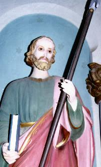
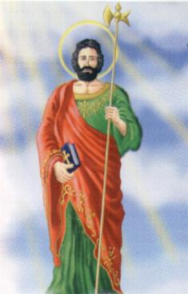
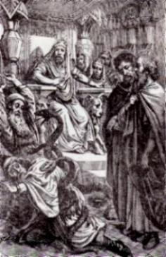

Quando São Judas
e São Simão evangelizavam a Pérsia, encontraram dois 
?Haverá uma grande guerra e combates terríveis, com grandes perdas para ambos os lados?.
São Judas e São Simão que estavam presentes deram boas gargalhadas com a resposta dos feiticeiros.
- Disse Baradach: Quem são vocês e porque estão rindo diante de uma notícia tão dolorosa e tão grave?
- Respondeu São Judas:
Somos hebreus, discípulos do SENHOR JESUS CRISTO e viemos aqui para pregar a
palavra de DEUS e trazer salvação a todos aqueles que acolherem a doutrina sagrada.
Estamos rindo, porque amanhã os Embaixadores inimigos virão aqui pedir paz e se
entregarão sem qualquer combate. Não será 
Os Encantadores cheios de inveja e despeito zombaram dos Apóstolos e insinuaram que aquilo era uma trama do inimigo, a fim de que os persas não se preparassem para os combates.
Baradach diante daqueles argumentos, por segurança decidiu prender os dois Apóstolos.
No dia seguinte, pela manhã, surgiram inesperadamente dois Embaixadores da Índia pedindo paz e propondo um armistício muito vantajoso para os babilônios.
O Capitão-chefe do Exército admirado com o que presenciou, mandou libertar imediatamente os Apóstolos e queria exterminar de vez com os dois Feiticeiros. São Judas interferiu pedindo que não o fizesse, dizendo:
?Não viemos aqui trazer a morte, mas a Vida em JESUS CRISTO?. E os magos foram colocados em liberdade.
Os Encantadores e Feiticeiros
vencidos não ficaram agradecidos aos 
?Vocês não morrerão, mas serão feridos por elas e gritarão com muitas dores?.
As serpentes mordiam ferozmente os feiticeiros que gritavam sem cessar. Os Apóstolos ordenaram as serpentes que tirassem com o seu veneno, todo o mal que estava enraizado neles. Por três dias os encantadores sofreram as dores das mordidas, mas por fim, levantaram-se curados. São Judas foi visita-los e lhes disse:
?DEUS não quer o sofrimento de vocês. Levantem e sigam para onde quiserem?.
Ficaram completamente curados, todavia, se obstinaram no erro e não quiseram se converter. Conceberam um plano odioso para assassinar os dois Apóstolos.